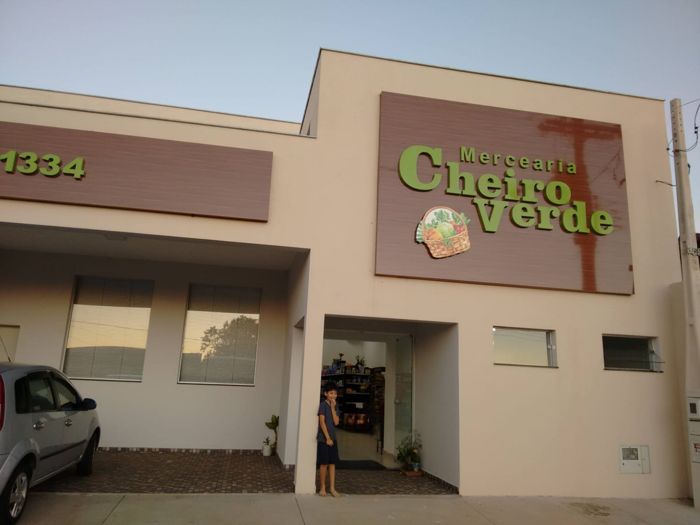
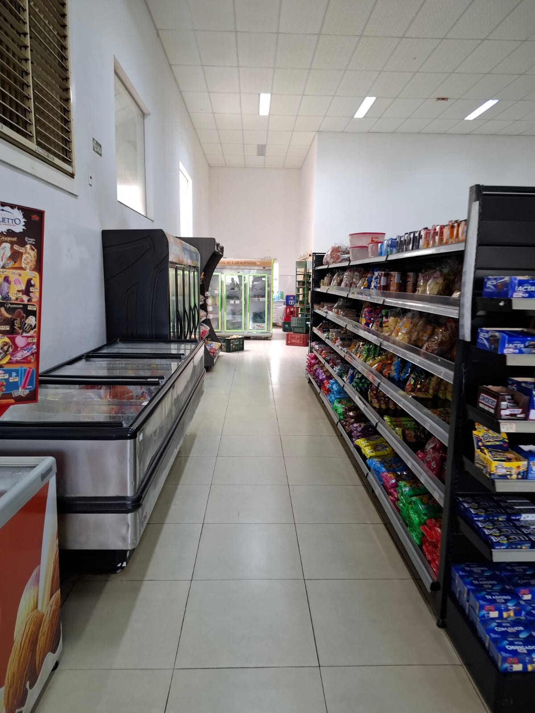
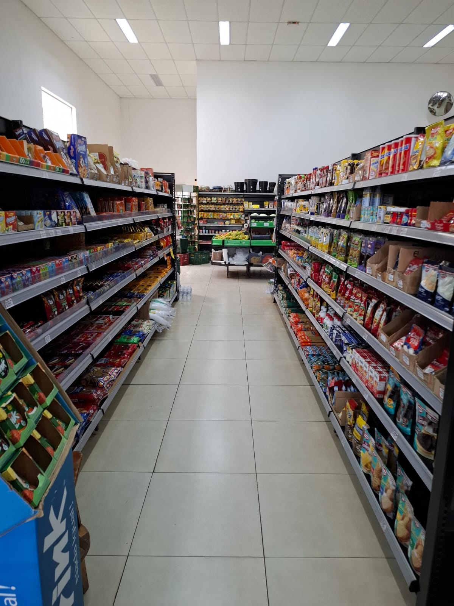
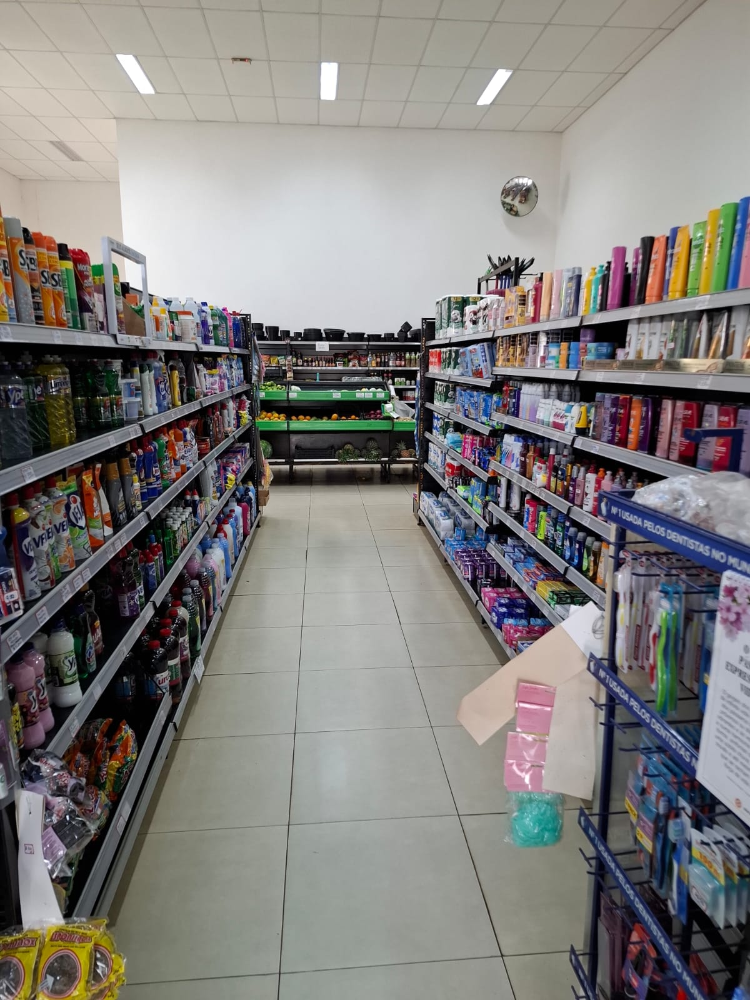
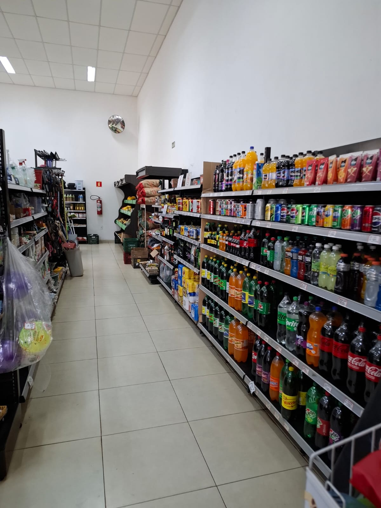

Mercearia de bairro, desde sempre por aqui
Cheiro
Verde
Fruta bonita, verdura fresca e aquele papo de sempre.
Nome de tempero, jeito de vizinho: aqui a gente não pega qualquer legume da caixa — escolhe um a um, olhando cor e ponto, pra sua sacola sair só com o que há de melhor no dia.

A mercearia do seu bairro
A Cheiro Verde é mercearia de cidade pequena, do jeito que cidade pequena gosta: você entra e é atendido pelo nome, sem pressa. A gente não separa qualquer fruta ou verdura da caixa — escolhe uma a uma, olhando cor, ponto e tamanho, porque comida bonita também rende mais na cozinha.
Além do hortifruti fresco, temos uma boa variedade de mercearia completa pra não faltar nada na sua lista. Atendimento simpático, produtos de qualidade e aquele cheirinho de fruta madura logo na entrada.
- Seleção criteriosa — só os produtos mais bonitos do dia vão pra prateleira.
- Mercearia completa — do hortifruti aos itens do dia a dia, num só lugar.
- Atendimento de vizinho — simpático, sem pressa, do jeito de cidade pequena.


O que você encontra por aqui




* Fotos ilustrativas — serão substituídas por fotos reais da loja.
Vem nos visitar
Avenida José Lopes Peres, 369 (18) 3602-1334 (18) 99746-2020 — falar agora Chamar no WhatsAppHorário de funcionamento
- Segunda a sábado
- 7h30 às 19h
- Domingos
- 7h30 às 11h30
- Feriados
- 7h30 às 12h